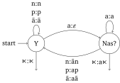
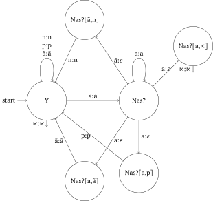
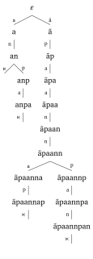
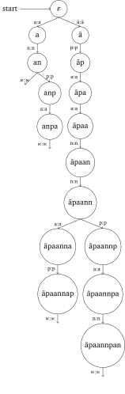
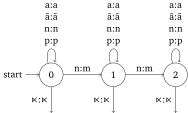
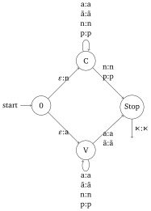
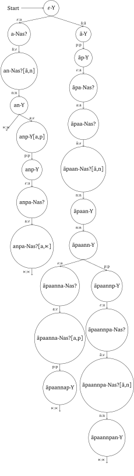

From surface forms to underlying representations: phonological parsing
- strings(parts of strings)
We now have a very good idea of how FSTs allow us to model the process of mapping underlying representations (URs) to their surface forms. But when you think about it, most of the phonological workload you have to deal with on a regular basis isn’t so much about mapping URs to surface forms. That’s what you have to do in order to produce an utterance, but odds are that every day you do a lot more listening than talking (insert some zinger about university administrators here). Listening presents us with the opposite challenge: we hear surface forms and we need to figure out their URs. That is to say, the listener has to parse the surface form into a UR. Parsing is a lot harder than one might expect at first, but FSTs allow us to use some very smart tricks to make the retrieval of URs very easy and efficient.
The challenges of parsing surface forms
Mathematically, switching from rewriting of URs to parsing of surface forms is a trivial problem. A transduction \(T\) from URs to surface form is just a relation — we say that \(u \mathrel{T} v\) iff \(v\) is a surface form of \(u\). The mapping from surface forms to URs is simply the inverse of \(T\), denoted \(T^{-1}\). The definition of \(T^{-1}\) is straight-forward: \(v \mathrel{T^{-1}} u\) iff \(u \mathrel{T} v\). In other words, take \(T\), switch \(u\) and \(v\), and you have \(T^{-1}\). Alright, there we go, problem solved, time to kick back and have a brewski.
Sorry to disappoint you, but this answer is not satisfying at all. Being able to define \(T^{-1}\) is all nice and dandy, but we want to be able to compute it. The definition above isn’t really viable for that. In order to determine all the URs for some surface form \(v\), we would have to look at every UR \(u\) and see if \(u \mathrel{T} v\) holds. If the set of URs is infinite, that’s simply impossible. And even if the set of URs is finite, it will still contain tens of thousands of URs, and we cannot afford to go through each one of them and check whether it can be used to produce \(v\). It would take way too long! Also, it is linguistically implausible because it predicts that the time it takes a speaker to reconstruct a UR from a surface form grows with the number of URs the speaker knows. Nothing along those lines has been found in any psycholinguistic experiment. The mathematical definition is neither efficient nor cognitively feasible as a model of phonological parsing.
FSTs can compute their inverse
Fortunately we do not have to look very far for a solution to the parsing problem as it is already baked into our treatment of UR rewriting as finite-state transductions. These transductions make it very easy to compute their inverse. Given an FST computing a transduction \(T\), it takes only two steps to construct another FST that computes \(T^{-1}\):
- Decompose output strings
We convert the FST to a normal form where no transition has more than one output symbol. We do this by adding new states so that we can replace every transition with multiple output symbols into a sequence of transitions where each one has exactly one output symbol. Suppose that state \(q\) has a transition x:y to state \(q'\) such that \(y \mathrel{\mathop:}=y_1 y_2 \cdots y_n\) is a string of \(n\) output symbols. We introduce new states of the special form \(q[\alpha]\) where \(\alpha\) is \(y\) but with a comma added to indicate how much of \(y\) we have already output. More formally, the new states are \(q[y_1, y_2 \cdots y_n]\), \(q[y_1 y_2, y_3 \cdots y_n]\), and so on until \(q[y_1 y_2 \cdots y_{n-1}, y_n]\). We then replace the transition x:y from \(q\) to \(q'\) with a sequence of transitions: \(\varepsilon:y_1\) from \(q\) to \(q[y_1, y_2 \cdots y_n]\), \(\varepsilon:y_2\) from \(q[y_1, y_2 \cdots y_n]\) to \(q[y_1 y_2, y_3 \cdots y_n]\), and so on, until we finally add \(x:y_n\) from \(q[y_1 y_2 \cdots y_{n-1}, y_n]\) to \(q'\). - The all-essential switcheroo
For every transition, we swap its input and output symbols. For example, x:y becomes y:x.
Consider once more the nasalization FST we have encountered in a previous unit.
| Y | Nas? | Initial | Final | |
| Y | n:n, p:p, ã:ã | a:\(\varepsilon\) | Yes | Yes(⋉) |
| Nas? | n:ãn, p:ap, ã:aã | a:a | No | Yes(a⋉) |

This FST contains four transitions with more than two output symbols, all of which are transitions from Nas?. We must replace them according to the instructions above. First, we introduce a new state Nas?[ã,n] and replace the n:ãn transition from Nas? to Y with two transitions: \(\varepsilon\):ã from Nas? to Nas?[ã,n], and n:n from Nas?[ã,n] to Y. Then we add another state Nas?[a,ã] and use it to replace the transition ã:aã, and we also add Nas?[a,p] to replace the p:ap transition. Finally, we add a new state Nas?[a,⋉] to replace the transition ⋉:a⋉ out of Nas? with \(\varepsilon\):a from Nas? to Nas?[a,⋉], followed by ⋉:⋉ out of Nas?[a,⋉].
| Y | Nas? | Nas?[ã,n] | Nas?[a,p] | Nas?[a,ã] | Nas?[a,⋉] | Initial | Final | |
| Y | n:n, p:p, ã:ã | a:\(\varepsilon\) | Yes | Yes(⋉) | ||||
| Nas? | a:a | \(\varepsilon\):ã | \(\varepsilon\):a | \(\varepsilon\):a | \(\varepsilon\):a | No | No | |
| Nas?[ã,n] | n:n | No | No | |||||
| Nas?[a,p] | p:p | No | No | |||||
| Nas?[a,ã] | ã:ã | No | No | |||||
| Nas?[a,⋉] | No | Yes(⋉) |
In order to verify that the two transducers in the example above produce the same surface forms, write down the surface forms that each one produces for the following URs (don’t forget to include ⋉ at the end of the input string):
- an
- anpa
- ãpaannap
- ãpaannpan
Careful, the \(\varepsilon\)-transitions make the transducer non-deterministic, so you might have to explore multiple paths in order to find one that actually allows you to process the input string.
Now that we have an FST for nasalization where no transition has more than one output symbol, we can construct the inverse of nasalization by swapping the input and output symbols of each transition.
| Y | Nas? | Nas?[ã,n] | Nas?[a,p] | Nas?[a,ã] | Nas?[a,⋉] | Initial | Final | |
| Y | n:n, p:p, ã:ã | \(\varepsilon\):a | Yes | Yes(⋉) | ||||
| Nas? | a:a | ã:\(\varepsilon\) | a:\(\varepsilon\) | a:\(\varepsilon\) | a:\(\varepsilon\) | No | No | |
| Nas?[ã,n] | n:n | No | No | |||||
| Nas?[a,p] | p:p | No | No | |||||
| Nas?[a,ã] | ã:ã | No | No | |||||
| Nas?[a,⋉] | No | Yes(⋉) |

In the previous exercise, you computed surface forms for the following URs:
- an
- anpa
- ãpaannap
- ãpaannpan
Verify that the inverse FST in the example above can produce these URs from the corresponding surface forms you computed.
Careful, the FST is non-deterministic, so it might take some effort to find a path that works.
As you can see, computing the inverse of a finite-state transduction requires no new tricks or machinery. It can be a bit painful to construct the corresponding FST that has no transitions with multiple output symbols, and since the result may be non-deterministic, it can be a bit harder to find a workable sequence of transitions. But non-deterministic FSTs are still FSTs, and with a bit of experience it isn’t too hard to handle the non-determinism. Overall, it is surprisingly simple (in particular when compared to parsing sentence structure, which is hard).
The problem of potential URs versus actual URs
Simple as the inverse FST construction might be, it runs into a teeny-weeny problem: it does not do what we want it to! We are interested in mapping surface forms to their URs, but the inverse FST maps each surface form to all logically possible URs that the surface form could have been produced from.
Consider the surface form ãpaãnnap of the UR ãpaannap. If we run the surface form through the inverse nasalization FST, we get two outputs:
- ãpaannap
- ãpaãnnap
The first is the actual UR we had in mind. The second one is a potential UR in the sense that if we feed it into the nasalization FST, we will get the surface form ãpaãnnap. But that does not mean that it is an actual UR of our toy language. Maybe it is, maybe it isn’t.
For an even more striking example, consider a language that still uses a, ã, n, and p as above, but where underlying a is always rewritten ã no matter what the context looks like. Write down the FST for this and construct its inverse (you may use tables or graphs). How many output forms does the inverse FST produce for the following surface forms?
- ãp
- ãpãp
- ãpãpãp
- ãpãpãpãpãp
For another example, suppose that we have composed nasalization with nasal deletion into a single FST that rewrite a as ã before n and subsequently deletes n before p. Suppose our language contains a single UR anpanpanp. What is the surface form produced from this UR, and how many putative URs does the inverse FST produce from this surface form?
Alright, here is the worst-case scenario: suppose that underlying n is always deleted. Write down the FST for this and construct its inverse (you may use tables or graphs). How many output forms does the inverse FST produce for the surface form a?
The inverse construction above is behaving correctly in the sense that it does undo the rewrite rules implemented by the original FST. But it does so in all possible ways, which means that it will often produce strings that are not actual URs of the language.
Mathematically, this isn’t much of a problem because it is easy to define the set of actual URs for any given surface form \(s\). Let \(\mathrm{Lex}\) (short for lexicon) be the set that lists all URs of the language, and let \(U\) be the set of putative URs the inverse FST produces from surface form s. Then the set of actual URs of s is the intersection of the two, \(\mathrm{Lex} \cap U\). But this is yet another case where the mathematical definition is not very satisfying. Intersection is a costly operation, and its cost grows with the size of \(\mathrm{Lex}\) and \(U\). As noted at the beginning of this section, there is no experimental evidence that surface form parsing is contingent on the size of the lexicon. While intersection is the mathematically correct description, it once again does not tell us how we should actually go about computing the intersection, which is the part that’s most interesting from a cognitive perspective. Once again, though, FSTs offer a neat solution.
The lexicon as a transduction
So far we have implicitly assumed that phonology operates over a fixed set of URs that are rewritten into surface forms. But this isn’t quite how modern phonology works. Many phonologists subscribe to a specific principle called the richness of the base. Richness of the base states that every random string is a possible input to the phonological grammar, but phonology has constraints that will weed out strings that aren’t URs. In other words, the set of URs isn’t part of the lexicon, it is part of the grammar!
Richness of the base is a very natural fit for the FST model. So far, we have designed FSTs that, when composed into a single cascade FST \(T\), will rewrite URs in the mental lexicon as their corresponding surface forms. In other words, the phonological transduction is a relation between \(\mathrm{Lex}\) and the set \(S\) of surface forms. Richness of the base tells us that we should instead construct a slightly different FST \(T'\) that works for any arbitrary string and will still just produce the intended set of surface forms. That is to say, the FST \(T'\) defines a relation between \(\Sigma^*\) and \(S\). But how could that possibly work? How could we get rid of the lexicon and still produce the same set of surface forms?
The answer is surprisingly simple: represent your lexicon as a transducer \(L\), and compose \(L\) with \(T\) in order to obtain \(T'\). There are many ways to construct \(L\), but a particularly simple one starts out with a prefix tree representation of the lexicon. This is a tree where the root is the empty string, each branch is labeled with a symbol, and a node is labeled, say, abc iff one can reach it from the root by following three edges labeled a, b, and c, respectively. If a node corresponds to a lexical item, it has an outgoing branch labeled ⋉.
Suppose our lexicon consist only of following URs.
- an
- anpa
- ãpaannap
- ãpaannpan
This corresponds to the prefix tree below.

We can also write down the prefix tree linearly by using brackets to indicate a step down in the tree and using commas to separate branches. In this format, we omit node labels and only list the edge labels.
- (a(n(⋉, p(a(⋉)))), ã(p(a(a(n(n(a(p(⋉)), p(a(n(⋉))))))))))
The bracketed format highlights how the node labels are redundant and all the work is being done by the edge labels, but it is also very cluttered. We can make things more readable by dropping brackets when there is only one way of moving down in the prefix tree.
- (an(⋉, pa⋉), ãpaann(ap⋉, pan⋉))
Prefix trees have many appealing properties. For example, they are very easy to expand and modify.
Suppose that the following are also URs:
- ap
- anap
- ãpaa
- pa
Modify the prefix tree from the example above so that it also includes these URs. You may draw the modified prefix tree or specify it in the (simplified) bracketed format.
Modify the prefix tree from the example above so that an is no longer a UR. You may draw the modified prefix tree or specify it in the (simplified) bracketed format.
But for our purposes, the appeal of prefix trees is that they can be regarded as a special case of FSTs. The root of the tree is the only initial state, and every branch labeled x is actually a transition labeled x:x.
The prefix tree from the example above corresponds to the FST depicted below.

The tabular representation of this FST would be pretty large with tons of empty cells, so for once it is easier to just write down the transitions:
- \(\varepsilon\) \(\xrightarrow{a:a}\) a
- a \(\xrightarrow{n:n}\) an
- an \(\xrightarrow{{\ltimes}:{\ltimes}}\)
- an \(\xrightarrow{p:p}\) anp
- anp \(\xrightarrow{a:a}\) anpa
- anpa \(\xrightarrow{{\ltimes}:{\ltimes}}\)
- \(\varepsilon\) \(\xrightarrow{\tilde{a}:\tilde{a}}\) ã
- ã \(\xrightarrow{p:p}\) ãp
- ãp \(\xrightarrow{a:a}\) ãpa
- ãpa \(\xrightarrow{a:a}\) ãpaa
- ãpaa \(\xrightarrow{n:n}\) ãpaan
- ãpaan \(\xrightarrow{n:n}\) ãpaann
- ãpaann \(\xrightarrow{a:a}\) ãpaanna
- ãpaanna \(\xrightarrow{p:p}\) ãpaannap
- ãpaannap \(\xrightarrow{{\ltimes}:{\ltimes}}\)
- ãpaann \(\xrightarrow{p:p}\) ãpaannp
- ãpaannp \(\xrightarrow{a:a}\) ãpaannpa
- ãpaannpa \(\xrightarrow{n:n}\) ãpaannpan
- ãpaannpan \(\xrightarrow{{\ltimes}:{\ltimes}}\)
The FST obtained from a prefix tree acts like a filter. It does not actually change any of the input strings, but the only input strings it produces an output for are those that correspond to lexical items in the prefix tree.
For each one of the following strings, list the corresponding output produced by the FST in the example above. If no output is produced at all, say so.
- an
- anp
- ãn
- ãpaannap
- ãpaannapa
Now suppose that we have used this prefix tree construction in order to represent the lexicon as an FST \(L\). What happens if we compose \(L\) with the nasalization FST? We get an FST that can take any arbitrary string as input but will only produce an output for those strings that are URs in our lexicon.
The composition of the FST above with the nasalization FST yields the FST below.
Again it is easier to write down the transitions directly instead of using the tabular format.
- \(\varepsilon\)-Y \(\xrightarrow{a:\varepsilon}\) a-Nas?
- a-Nas? \(\xrightarrow{n:\tilde{a}n}\) an-Y
- an-Y \(\xrightarrow{{\ltimes}:{\ltimes}}\)
- an-Y \(\xrightarrow{p:p}\) anp-Y
- anp-Y \(\xrightarrow{a:\varepsilon}\) anpa-Nas?
- anpa-Nas? \(\xrightarrow{{\ltimes}:a{\ltimes}}\)
- \(\varepsilon\)-Y \(\xrightarrow{\tilde{a}:\tilde{a}}\) ã-Y
- ã-Y \(\xrightarrow{p:p}\) ãp-Y
- ãp-Y \(\xrightarrow{a:\varepsilon}\) ãpa-Nas?
- ãpa-Nas? \(\xrightarrow{a:a}\) ãpaa-Nas?
- ãpaa-Nas? \(\xrightarrow{n:\tilde{a}n}\) ãpaan-Y
- ãpaan-Y \(\xrightarrow{n:n}\) ãpaann-Y
- ãpaann-Y \(\xrightarrow{a:\varepsilon}\) ãpaanna-Nas?
- ãpaanna-Nas? \(\xrightarrow{p:ap}\) ãpaannap-Y
- ãpaannap-Y \(\xrightarrow{{\ltimes}:{\ltimes}}\)
- ãpaann-Y \(\xrightarrow{p:p}\) ãpaannp-Y
- ãpaannp-Y \(\xrightarrow{a:\varepsilon}\) ãpaannpa-Nas?
- ãpaannpa-Nas? \(\xrightarrow{n:\tilde{a}n}\) ãpaannpan-Y
- ãpaannpan-Y \(\xrightarrow{{\ltimes}:{\ltimes}}\)
Notice how the composed FST still has the same structure as the prefix tree, only two things have changed: the names of the states, which do no matter, and the actual rewrite steps carried out by the transitions. The only way the composition can have a different structure from the prefix tree is if one of the FSTs can produce multiple outputs from the same input.
Consider the non-deterministic FST below, which can optionally rewrite up to two instances of n as m.
| 0 | 1 | 2 | Initial | Final | |
| 0 | a:a, ã:ã, n:n, p:p | n:m | Yes | Yes(⋉) | |
| 1 | a:a, ã:ã, n:n, p:p | n:m | No | Yes(⋉) | |
| 2 | a:a, ã:ã, n:n, p:p | No | Yes(⋉) |

Compose the FST in the example above with this FST for optional rewriting of n.
Now consider the FST below, which inserts a at the beginning of the input if the input ends with a vowel, and n if it ends with a consonant. This is not a naturally occurring process, but language games like pig latin implement a more complicated version of this rewrite step.
| 0 | C | V | Stop | Initial | Final | |
| 0 | \(\varepsilon\):n | \(\varepsilon\):a | Yes | Yes | ||
| C | a:a, ã:ã, n:n, p:p | n:n, p:p | No | No | ||
| V | a:a, ã:ã, n:n, p:p | a:a, ã:ã | No | No | ||
| Stop | No | Yes |

Compose the FST in the example above with this FST for word-initial consonant/vowel insertion. Do you get a structure distinct from the prefix tree FST? What if you remove all nodes from which one cannot reach a final state?
As we noted before, almost all phonological processes produce exactly one surface form for a given UR. For these processes, transducer composition actually gets easier if we start out with the lexical FST because we keep the overall arrangement of states and only change the specific rewriting carried out by each transition. Turning the lexicon into an FST isn’t just a mathematical trick, it is linguistically pleasing because it incorporates the lexicon into the grammar in a manner that makes it much easier to handle fundamental operations like composition — and, of course, parsing. Constructing the inverse of the FST in the example above is easy and gives us a transduction that relates surface forms only to existing URs, not all logically possible ones.
After adding new states and switching input and output symbols on the transitions, we get the FST below.

Now consider once more the surface form ãpaãnnap of the UR ãpaannap. Earlier on, we saw that the inverse of the nasalization FST yields two URs for this surface form:
- ãpaannap
- ãpaãnnap
But the transducer above provides only one UR, which is ãpaannap as desired.
In a previous exercise, you computed surface forms for the URs below:
- an
- anpa
- ãpaannap
- ãpaannpan
Verify that the FST in the example above correctly maps each one of those surface forms to the corresponding UR in that list.
So there you have it, a finite-state procedure that correctly maps each surface form to all the actual URs it can be produced from, rather than all logically possible ones. It is remarkable that FSTs provide the means for both the generation of surface forms from URs and for parsing surface forms into URs. This flexibility is why FSTs were all the rage for practical tasks like speech recognition and speech synthesis in the 80s and 90s. And while this has changed in recent years with the overwhelming success of neural networks, FSTs still provide us a deep window into phonology as a grammar of rewrite processes.
Recap
- Phonological parsing is the process of mapping a given surface form to the URs this surface form can be obtained from. In the general case, parsing can be a very difficult task, but FSTs make it easy.
- Assuming the FST is in a format where no transition has more than one output symbol, we switch the input symbol and the output symbol of each transition. This yields an FST that parses each surface form into all logically possible URs for that surface form.
- In order to limit parsing to existingURs, we represent the lexicon as a prefix tree, turn that prefix tree into an FST, and then compose this FST with the cascade FST that carries out all our rewrite rules. Applying the inverse construction to this new FST yields an FST than maps every surface forms to all the existing URs.